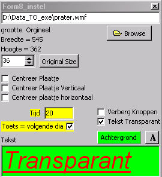

Met deze vraag kan schermvullend een plaatje worden getoond. Dus ook de normale besturingsknoppen kunnen daarbij worden verborgen. Naar keuze kan het plaatje een vaste tijd blijven staan, en/of blijven staan totdat een toets wordt ingedrukt.
Voor een demo, zie de vragenlijst "Dia_vragenlijst_demo".
Dit vraagtype is aanwezig vanaf versie V9.4
Mogelijke Instellingen 
|
Het instellingen venster, zoals hier naast getoond, kan worden opgeroepen, door op een willekeurige plaats van de vraag de rechter muistoets in te drukken en uit het menu "Instellingen" te kiezen.
De volgende zaken kunnen worden ingesteld: - het plaatje dat wordt weergegeven - schaling en positie van het plaatje - de achtergrond van het plaatje - - de maximale display tijd - of een toets de vraag beëindigt - - een (transparante) tekst - het font van deze tekst - - zichtbaar zijn van de normale knoppen |
 |
Het plaatje moet een grafisch bestand zijn van het volgende type jpg, jpeg, bmp, ico, emf, wmf.
Het plaatje kan geschaald worden middels de up/down box naast de knop "Orginal Size". De aspekt-ratio van het plaatje blijft altijd behouden. Met de knop "Orginal Size" kan het plaatje weer naar zijn oorspronkelijke formaat worden teruggebracht.
Door het plaatje te slepen, kan het worden gepositioneerd.. Daarnaast zijn er enkele checkboxen aanwezig waarmee een nauwkeurige centrering kan plaatsvinden.
De achtergrond kleur kan worden ingesteld met de toets "Achtergrond".
Een al dan niet transparante tekst van maximaal 1 regel kan over het plaatje worden geplaatst.
De tekst kan gepositioneerd worden door te slepen. Het font van de tekst (en dus ook de kleur van het font) kan worden ingesteld door op de toets "A" te drukken.
Met de checkbox "Verberg Knoppen", kunnen de normale besturingknoppen van de vragenlijst module worden verborgen. De diavraag wordt daartoe naar onder uitgebreid.
Tip: in de edit mode, met exacte patientweergave en verberg knoppen, lijkt het niet meer mogelijk te editten. Om verder te kunnen gaan, kan met F10, worden overgeschakeld naar de "alles goed zichtbaar" mode.
Tijdens de test afname, blijft het plaatje een vaste tijd staan of totdat de patient een willekeurige toets indrukt, waarbij de ingestelde tijd als maximum tijd fungeert.
De tijd wordt uitgedrukt in seconden. Als voor de tijd een waarde 0 wordt ingevuld, blijft het plaatje eeuwig staan, tenzij er is ingesteld dat het plaatje verdwijnt als een toets wordt ingedrukt.
Enige voorbeelden:
20 sec, geen toets :het plaatje blijft een vaste tijd van 20 seconden staan
20 sec, wel toets :het plaatje verdwijnt als een toets wordt ingedrukt of uiterlijk na 20 sec
0 sec, wel toets :het plaatje verdwijnt alleen als er een toets wordt ingedrukt.
Op deze vraag wordt geen antwoord geregistreerd, en er kunnen dus ook geen subschalen en normen aan gehangen worden.
Uitbreidingsmogelijkheden 
Het is in prinicipe mogelijk om de tijd te meten hoe lang een plaatje wordt getoond, voordat deze door de patiënt wordt weggeklikt. De hoogste tijdresolutie is daarby 100 msec. De gemeten tijd kan dan in het rapport en de SPSS export worden opgenomen.
© Copyright Instrumentele Dienst, 1999-2004